Storage and File Structure¶
约 8456 个字 26 张图片 预计阅读时间 29 分钟
主要面临的问题有
- Data Storage(数据存储) ：如何高效地存储和管理数据。
- API 应用程序接口 (SQL) ：提供标准化的接口，支持查询、插入、删除和更新操作。
- High Performance(高性能) ：通过索引、缓冲管理、查询处理和优化来提升数据库性能。
- Concurrent Control(并发控制) ：确保多个用户同时访问数据库时的一致性和正确性。
- Reliability(可靠性) ：在系统故障时，保证数据的完整性和可恢复性。
- Security(安全性) ：通过授权和加密机制保护数据免受未授权访问。
Overview of Physical Storage Media¶
Physical Level of Databases¶
-
Files and Storage : 数据库在物理层面上存储为文件，例如
.mdf,.ldf,.ora,.dbf等。 -
Storage Media Classification :
- Speed: 数据访问速度。
- Cost: 每单位数据的存储成本。
- Reliability:数据在断电或系统崩溃时可能丢失。存储设备的物理故障（如 RAID 提供的容错机制）。
Storages classified by reliability:
- Volatile storage: loses contents when power is switched off, e.g., DDR2, SDR.
- Non-volatile storage(非易失性存储器): contents persist even when power is switched off. Includes secondary and tertiary storage, as well as batter-backed up main-memory.
Storages classified by speed: - Cache - Main-memory - Flash memory - Magnetic-disk - Optical storage - Tape storage
Hierarchy¶
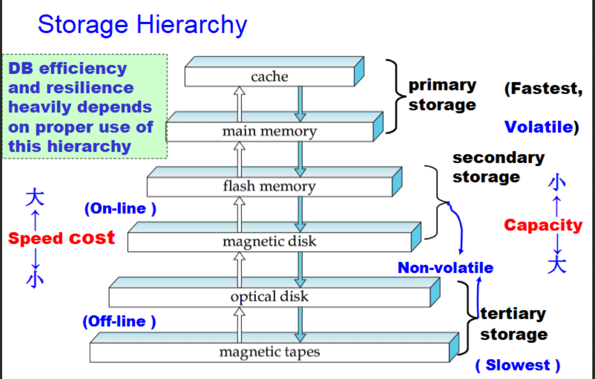
-
Primary storage: Fastest media but volatile (cache, main memory).
-
Secondary storage (辅助存储器，联机存储器): next level in hierarchy, non-volatile, moderately fast access time ;Also called on-line storage E.g., flash memory, magnetic disks
-
Tertiary storage (三级存储器，脱机存储器): lowest level in hierarchy, non-volatile, slow access time ;also called off-line storage,E.g., magnetic tape, optical storage
Physical Storage Media (Cont.)¶
Cache¶
- Fastest and most costly form of storage, volatile, and managed by the computer system hardware.
- Speed: ≤ 0.5 nanoseconds (ns, 1 ns = 10⁻⁹ seconds).
- Size: ~ KB to ~ MB.
Main Memory¶
- Fast access : 10 to 100 ns.
- Capacity : Generally too small (or too expensive) to store the entire database.
- Widely used capacities: up to a few Gigabytes (1 GB = \(10^9\) B).
- Capacities have increased, and per-byte costs have decreased steadily (roughly a factor of 2 every 2–3 years).
- Volatile : Contents are lost during power failure or system crash.
Flash Memory (快闪存储器)¶
- Also known as EEPROM (Electrically Erasable Programmable Read-Only Memory, 电可擦可编程只读存储器).
- Non-volatile : Data survives power failures.
- Write/Erase Limitations :
- Data can be written at a location only once, but the location can be erased and rewritten.
- Supports a limited number of write/erase cycles (10K–1M).
- Erasing must be done to an entire bank of memory.
- Performance :
- Reads: Roughly as fast as main memory (< 100 ns).
- Writes: Slower (~10 μs), and erases are even slower.
- Cost : Similar to main memory.
- Usage : Widely used in embedded devices such as digital cameras, phones, and USB keys.
Magnetic Disk¶
- Storage : Data is stored on spinning disks and read/written magnetically.
- Primary medium : Used for long-term storage, typically storing the entire database.
- Access :
- Data must be moved to main memory for access and written back for storage.
- Much slower access than main memory.
- Direct-access: Data can be read in any order (unlike magnetic tape).
- Capacity :
- Ranges up to ~1.5 TB (as of 2009).
- Larger capacity and lower cost/byte than main memory or flash memory.
- Growing rapidly with technology improvements (factor of 2–3 every 2 years).
- Reliability :
- Survives power failures and system crashes.
- Disk failure is rare but can destroy data.
Optical Storage¶
- Non-volatile : Data is read optically from a spinning disk using a laser.
- Popular Forms :
- CD-ROM (640 MB).
- DVD (4.7–17 GB).
- Write Types :
- Write-once, read-many (WORM) disks (e.g., CD-R, DVD-R) for archival storage.
- Multiple-write versions available (e.g., CD-RW, DVD-RW, DVD-RAM).
- Performance :
- Reads and writes are slower than magnetic disks.
- Juke-box Systems(自动光盘机) :
- Large numbers of removable disks with a few drives.
- Mechanism for automatic loading/unloading of disks for storing large volumes of data.
Tape Storage¶
- 非易失性 ：主要用于备份（从磁盘故障中恢复）和归档数据。
- 顺序访问 ：访问速度远慢于磁盘。
- 容量 ：容量非常高（40 到 300 GB 的磁带可用）。
- 可移除 ：磁带可以从驱动器中移除，因此存储成本远低于磁盘，但驱动器价格昂贵。
- 磁带自动机 (Tape Jukebox) ：
- 可用于存储海量数据。
- 容量范围从数百 TB（1 TB = \(10^{12}\) 字节）到甚至 PB（1 PB = \(10^{15}\) 字节）。
Magnetic Disks¶
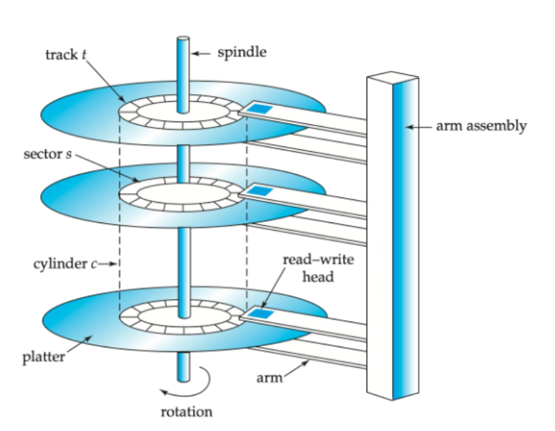
Disk Structure¶
磁头 (Read-Write Head)
- 位置：磁头非常接近盘片表面（几乎接触）。
- 功能：用于读取或写入磁性编码的信息。
盘片表面 (Surface of Platter)
-
圆形磁道 (Tracks)：
- 盘片表面被划分为多个圆形磁道。
- 典型硬盘每个盘片上有超过 50K–100K 条磁道。
-
扇区 (Sectors)：
- 每个磁道被划分为多个扇区。
- 扇区是可以读取或写入的最小数据单位。
-
扇区大小：通常为 512 字节。
-
每磁道的扇区数：
- 内圈磁道：500 到 1000 个扇区。
- 外圈磁道：1000 到 2000 个扇区。
读/写扇区 (To Read/Write a Sector)
- 磁臂 (Disk Arm)：
- 磁臂移动以将磁头定位到正确的磁道上。
- 盘片旋转 (Platter Spins)：
- 盘片持续旋转，当扇区经过磁头下方时，数据被读取或写入。
磁头-磁盘组件 (Head-Disk Assemblies)
- 多盘片 (Multiple Disk Platters)：
- 单个主轴上通常有 4 到 16 个盘片。
- 磁头 (Heads)：
- 每个盘片对应一个磁头，所有磁头安装在一个公共磁臂上。
- 柱面 (Cylinder)：
- 第 i 个柱面由所有盘片的第 i 个磁道组成。
磁盘控制器 (Disk Controller)
- 功能：
- 作为计算机系统与磁盘驱动硬件之间的接口。
- 接收高层次的读/写扇区命令。
- 执行动作，例如移动磁臂到正确的磁道并实际读取或写入数据。
- 校验和 (Checksum)：
- 计算并附加校验和到每个扇区，以验证数据是否正确读取。
- 如果数据损坏，存储的校验和与重新计算的校验和很可能不匹配。
- 写入验证 (Write Verification)：
- 写入后通过读取扇区来确保写入成功。
- 坏扇区重映射 (Bad Sector Remapping)：
- 将坏扇区从逻辑地址映射到预留的物理扇区。
- 重映射信息记录在磁盘或其他非易失性存储器中。
磁盘的性能主要由以下几个方面决定：
- 转速（RPM）：盘片的旋转速度，转速越高，数据访问速度越快。
- 磁头寻道时间（Seek Time）：磁头移动到目标轨道所需的时间，寻道时间越短，数据访问速度越快。
- 数据传输率（Data Transfer Rate）：硬盘与计算机之间的数据传输速度，传输率越高，数据访问速度越快。
- 缓存（Cache）：硬盘内部的高速缓存，用于临时存储数据，提高数据传输效率。
Quote
Optimization of Disk-Block Access¶
Block¶
- 定义：来自单个磁道的连续扇区序列。
- 数据传输：数据在磁盘和主存之间以块为单位传输。
- 块大小：
- 范围从 512 字节到几千字节。
- 小块：需要更多的磁盘传输。
- 大块：可能浪费更多空间（由于部分填充的块）。
- 典型块大小：目前范围为 4 到 16 KB。
Disk-Arm-Scheduling Algorithms¶
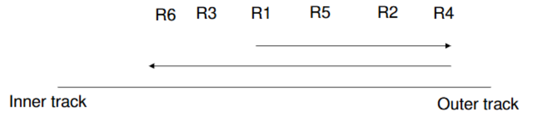
- 目标：对磁盘访问请求进行排序，以最小化磁盘臂的移动。
- 电梯算法 (Elevator Algorithm)：
- 磁盘臂向一个方向移动（从外圈到内圈或反之），处理该方向上的下一个请求。
- 当该方向没有更多请求时，反转方向并重复。
File Organization¶
- 优化块访问时间：通过组织块的位置，使其与数据访问方式相对应。
- 例如，将相关信息存储在同一个柱面或附近的柱面上。
- 文件碎片化：
- 随着文件中数据的插入或删除，文件可能会变得碎片化。
- 如果磁盘上的空闲块分散，新创建的文件可能会被分散存储。
- 对碎片化文件的顺序访问会导致磁盘臂移动增加。
- 碎片整理工具：
- 一些系统提供碎片整理工具以加速文件访问。
- 但在运行这些工具时，系统通常无法使用。
非易失性写缓冲区 (Nonvolatile Write Buffers)¶
-
作用：通过将块立即写入非易失性 RAM 缓冲区来加速磁盘写入。
-
非易失性 RAM：
- 由电池供电的 RAM 或闪存组成。
- 即使断电，数据仍然安全，并将在电力恢复后写入磁盘。
- 控制器行为：
- 当磁盘没有其他请求或请求等待了一段时间时，控制器将数据写入磁盘。
- 数据库操作可以在数据写入磁盘之前继续运行。
- 写入可以重新排序以最小化磁盘臂移动。
日志磁盘 (Log Disk)¶
- 定义：专门用于写入块更新日志的磁盘。
- 特点：
- 写入日志磁盘非常快，因为不需要寻道。
- 不需要特殊硬件（如非易失性 RAM）。
- 文件系统行为：
- 日志文件系统以安全顺序将数据写入非易失性 RAM 或日志磁盘。
- 如果没有日志记录，重新排序写入可能会导致文件系统数据损坏。
RAID¶
Redundant Array of Inexpensive Disks RAID 最初是作为一种成本较低的替代方案，用于替代大型昂贵的磁盘。
RAID 中的 "I" 最初代表 "inexpensive"（廉价）。
如今，RAID 被视为 "independent"（独立的）。
Info
Disk organization techniques that manage a large numbers of disks, providing a view of a single disk of
•High capacity and high speed by using multiple disks in parallel, and
•High reliability by storing data redundantly, so that data can be recovered even if a disk fails
The chance that some disk out of a set of N disks will fail is much higher than the chance that a specific single disk will fail
Eg
a system with 100 disks, each with MTTF of 100,000 hours (approx. 11 years), will have a system MTTF of 1000 hours (approx. 41 days)
Techniques for using redundancy to avoid data loss are critical with large numbers of disks
Reliability improvement¶
-
冗余原理 ：存储额外的信息，用于在磁盘故障时重建丢失的数据
-
镜像(Mirroring)技术 ：
- 每个磁盘都有一个完整的副本
- 一个逻辑磁盘实际由两个物理磁盘组成
- 每次写操作都在两个磁盘上执行
- 读操作可以从任一磁盘进行
-
故障恢复 ：
- 单个磁盘故障时，数据仍可从镜像磁盘获取
- 只有当磁盘及其镜像磁盘在系统修复前都发生故障时才会丢失数据
- 这种双重故障的概率非常小
- 需注意依赖性故障模式(如火灾、建筑物倒塌或电涌)
-
平均数据丢失时间 ：
- 取决于平均故障时间(MTTF)和平均修复时间
- 示例：
- MTTF = 100,000小时
- 平均修复时间 = 10小时
- 镜像磁盘对的平均数据丢失时间 = 500 \(\times\) \(10^6\)小时(约57,000年)
- (计算公式：\(100000^2\)/(2 \(\times\) 10))
Performance improvement¶
- 并行化的主要目标 ：
- 负载均衡：通过处理多个小访问提高吞吐量
-
并行化大型访问以减少响应时间
-
数据条带化(Striping)技术 ：
1 比特级条带化 ：
- 将每个字节的位分散到多个磁盘
- 示例：在8个磁盘阵列中，每个字节的第i位写入第i个磁盘
- 可实现8倍于单磁盘的数据读取速率
- 缺点：寻道/访问时间比单磁盘更差
- 现在较少使用
2 块级条带化 ：
- 在n个磁盘中，文件的第i个块存储在第((i mod n) + 1)个磁盘上
- 不同块的请求可以在不同磁盘上并行运行
- 长序列块的请求可以并行使用所有磁盘
RAID levels¶
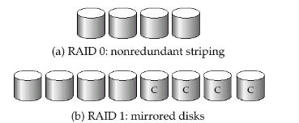
RAID Level 0¶
- 块级条带化 ：不具备冗余性。
- 应用场景 ：用于高性能应用，数据丢失不关键。
- 工作原理 ：使用块级条带化，将数据分散到多个磁盘上。没有冗余，因此数据丢失风险较高。
- 优点 ：提供高数据传输速率，适用于对性能要求高但数据安全性要求不高的应用。
RAID Level 1¶
- 镜像磁盘与块级条带化 ：提供最佳性能。
- 应用场景 ：常用于数据库系统中的日志文件存储。
- 工作原理 ：使用镜像技术，每个磁盘都有一个完整的副本。所有写操作都在两个磁盘上执行，读操作可以从任一磁盘进行。
- 优点 ：提供高数据安全性和读取性能，适用于需要高可靠性的数据存储。
RAID Level 2¶
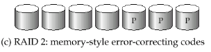
-
Memory-Style Error-Correcting-Codes (ECC)与比特级条带化 。
-
工作原理 ：使用内存风格的错误校正码(ECC)和比特级条带化。数据被分成位并分布在多个磁盘上，ECC用于错误检测和校正。
- 优点 ：提供错误校正能力，但实现复杂且成本较高。
RAID Level 3¶
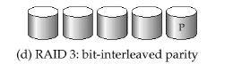
- 比特交错奇偶校验 ：
- 单个奇偶位足以进行错误校正。
- 写入数据时，需计算并写入相应的奇偶位。
- 数据恢复通过计算其他磁盘（包括奇偶位磁盘）的位的异或。
- 数据传输速度快于单个磁盘，但每个I/O需要所有磁盘参与。
- 工作原理 ：使用比特交错奇偶校验。一个奇偶位磁盘用于错误校正。写入数据时，需计算并写入相应的奇偶位。
- 优点 ：提供快速的数据传输速率，适用于需要高吞吐量的应用。
RAID Level 4¶
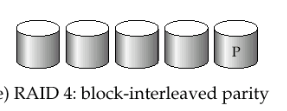
- 块交错奇偶校验 ：
- 使用块级条带化，并在单独的磁盘上保存奇偶校验块。
- 写入数据块时，需计算并写入相应的奇偶校验块。
- 数据恢复通过计算其他磁盘（包括奇偶校验块）的块的异或。
- 工作原理：使用块交错奇偶校验。数据块和奇偶校验块分布在不同的磁盘上。
- 优点：提供数据冗余和错误校正能力，但奇偶校验磁盘可能成为瓶颈。
RAID Level 5¶
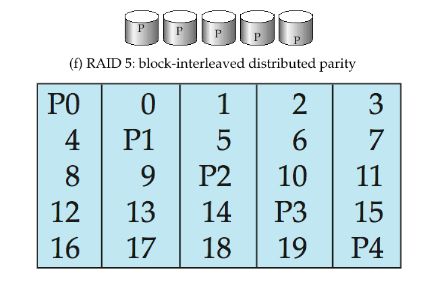
-
块交错分布式奇偶校验 ：
- 数据和奇偶校验分布在所有N+1个磁盘上。
- 提供比RAID 4更高的I/O速率。
- 避免了奇偶校验磁盘的瓶颈。
-
工作原理 ：使用块交错分布式奇偶校验。数据和奇偶校验分布在所有磁盘上，避免了单一奇偶校验磁盘的瓶颈。
- 优点 ：提供高I/O速率和数据冗余，适用于大多数应用。
RAID Level 6¶
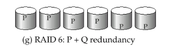
- P+Q冗余方案：
- 类似于RAID 5，但存储额外的冗余信息以防止多重磁盘故障。
- 提供比RAID 5更好的可靠性，但成本更高。
- 工作原理：使用P+Q冗余方案，类似于RAID 5，但增加了额外的冗余信息以防止多重磁盘故障。
- 优点：提供更高的可靠性，适用于需要极高数据安全性的应用。
Choosing RAID Levels
选择RAID级别的因素
- 成本 ：考虑经济成本。
- 性能 ：每秒I/O操作次数和正常操作期间的带宽。
- 故障期间的性能 ：在磁盘故障期间的性能表现。
- 故障磁盘重建期间的性能 ：包括重建故障磁盘所需的时间。
RAID级别的使用建议
- RAID 0 ：仅在数据安全性不重要时使用，例如数据可以从其他来源快速恢复。
- RAID 1和5 ：主要竞争者。
- RAID 1 ：提供更好的写入性能，适用于高更新率环境，如日志磁盘。
- RAID 5 ：适用于低更新率和大数据量的应用。
不常用的RAID级别
- RAID 2和4 ：不再使用，因为被RAID 3和5取代。
- RAID 3 ：由于比特级条带化需要单块读取所有磁盘，浪费磁盘臂移动，已不再使用。
- RAID 6 ：由于RAID 1和5提供了足够的安全性，RAID 6使用较少。
其他注意事项
- RAID 1 ：尽管存储成本较高，但随着磁盘容量的快速增长，成本影响减小。
- RAID 5 ：需要至少2次块读取和2次块写入来写入单个块，而RAID 1只需2次块写入。
Hardware¶
软件RAID¶
- 定义 ：完全通过软件实现的RAID，不需要特殊的硬件支持。
硬件RAID¶
- 定义 ：使用特殊硬件实现的RAID。
-
特点 ：
-
使用非易失性RAM记录正在执行的写操作。
- 注意：写入期间的电源故障可能导致磁盘损坏。
- 例如，在写入一个块后但在镜像系统中写入第二个块之前发生故障。
- 这种损坏的数据必须在恢复电源时检测到。
- 从损坏中恢复类似于从故障磁盘中恢复。
- NV-RAM有助于有效检测潜在的损坏块。
- 否则，必须读取磁盘的所有块并与镜像/奇偶校验块进行比较。
RAID 问题¶
潜在故障¶
Latent failure
- 定义 ：先前成功写入的数据被损坏。
- 影响 ：即使只有一个磁盘故障，也可能导致数据丢失。
数据清理¶
Data scrubbing
- 定义 ：持续扫描潜在故障，并从副本/奇偶校验中恢复。
热插拔¶
Hot swap
- 定义 ：在系统运行时更换磁盘，无需断电。
- 支持 ：由某些硬件RAID系统支持。
- 优点 ：减少恢复时间，大大提高可用性。
备用磁盘¶
Spare disk
- 定义 ：许多系统维护备用磁盘，在线保持，并在检测到故障时立即用作故障磁盘的替代品。
- 优点 ：大大减少恢复时间。
硬件RAID系统的可靠性¶
Reliability of hardware RAID systems
- 特点 ：确保单点故障不会停止系统功能。
- 方法 ：
- 使用带电池备份的冗余电源。
- 使用多个控制器和多重互连以防止控制器/互连故障。
Optical Disk
- 只读光盘 (CD-ROM，Compact Disc Read Only Memory)
- 特点：
- 可移动光盘，每张容量640 MB。
- 寻道时间约为100毫秒（光学读头较重且较慢）。
- 较高的延迟（3000 RPM）和较低的数据传输速率（3-6 MB/s），相比磁盘。
- 特点：
- 数字视频光盘 (DVD，Digital Versatile Disc)
- DVD-5：容量4.7 GB，DVD-9：容量8.5 GB。
- DVD-10和DVD-18：双面格式，容量分别为9.4 GB和17 GB。
- 蓝光DVD：27 GB（双面光盘为54 GB）。
- 寻道时间较慢，原因与CD-ROM相同。
- 一次写入版本 (CD-R和DVD-R)
- 特点：
- 数据只能写入一次，不能擦除。
- 高容量和长寿命；用于档案存储。
- 特点：
- 多次写入版本（CD-RW、DVD-RW、DVD+RW和DVD-RAM）也可用。
Magnetic Tape
-
大容量和高传输速率：
-
DAT（数字音频磁带）格式容量为几GB，DLT（数字线性磁带）格式容量为10-40 GB，Ultrium格式容量超过100 GB，Ampex格式容量为330 GB。
-
传输速率从几MB/s到几十MB/s。
-
磁带便宜，但驱动器成本很高。
-
访问时间非常慢，与磁盘和光盘相比：
-
仅限于顺序访问。
-
一些格式（如Accelis）提供更快的寻道（几十秒），但容量较低。
-
主要用于备份，存储不常用的信息，以及作为离线介质在系统之间传输信息。
-
磁带自动机用于超大容量存储：
-
多个PB（\(10^{15}\)字节）。
Storage Access¶
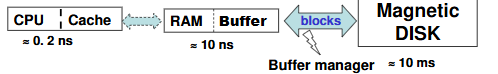
数据库文件被逻辑上划分为固定长度的存储单元，称为块（blocks）;块是数据库系统中存储分配和数据传输的单位。
缓冲区（Buffer）
- 定义：主存中可用来存储磁盘块副本的部分。
- 目标：数据库系统旨在最小化磁盘和内存之间的块传输次数。
- 减少磁盘访问次数：通过在主存中保留尽可能多的块来实现——即缓冲区。
- 限制：缓冲区的大小是有限的。
缓冲区管理器（Buffer Manager）
- 职责：负责在主存中分配缓冲区空间的子系统。
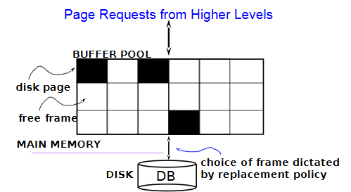
缓冲池（Buffer Pool）：
- 位于主存中，用于存储磁盘页的副本。
- 黑色方块表示已占用的磁盘页，白色方块表示空闲帧。
页面请求：
- 来自更高层次的请求需要访问数据。
- 数据必须在RAM中才能被DBMS操作。
磁盘（Disk）和数据库（DB）：
- 数据库文件存储在磁盘上。
- 数据从磁盘加载到缓冲池中。
帧选择：
- 由替换策略决定哪个帧用于存储新加载的页面。
帧和页的关系：
- 页（Page）：数据的单位。
- 块（Block）：磁盘空间的单位。
- 帧（Frame）：缓冲池的单位。
- 实际上，块和页不完全相同。
维护表：
- 维护一个
<frame#, pageid>对的表，用于跟踪缓冲池中的数据。
Buffer Management¶
请求块：
- 应用程序需要从磁盘获取块时，会调用缓冲管理器。
检查缓冲区：
- 如果块已在缓冲区中：
- 请求程序获得块在主存中的地址。
- 如果块不在缓冲区中：
- 缓冲管理器在缓冲区中为块分配空间。
- 如果没有空闲空间，则替换（丢弃）一些旧页。
写回磁盘：
- 被丢弃的块如果被修改过，则写回磁盘。
读取新块：
- 一旦在缓冲区中分配了空间，缓冲管理器从磁盘读取块到缓冲区，并将块在主存中的地址传递给请求者。
替换策略：
- 使用LRU（最近最少使用）或MRU（最近最多使用）策略。
固定块(Pinned Block)：
- 被固定的块不允许写回磁盘，直到使用结束。
立即丢弃策略：
- 块的最后一个元组处理完后，立即释放空间。
强制输出： - 请求者必须解锁块，并指示页面是否被修改。 - 使用“脏位”标识修改。
页面请求：
- 缓冲池中的页面可能被多次请求。
- 使用固定计数(Pin Count)，只有当固定计数为0时，页面才是替换的候选。
Buffer-replacement Policies¶
- LRU策略（最近最少使用策略） ：
- 原理 ：替换最近最少使用的块。
- 思路 ：使用过去的块引用模式作为未来引用的预测。
- 优点 ：适用于有明确访问模式的查询。
- 缺点 ：对于涉及重复扫描数据的查询，LRU可能表现不佳。
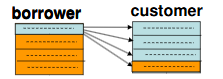
设 M = 5 (buffer has 5 blocks), 1 for borrower, 3 for customer, 1 for out 对customer, LRU的块可能是下面快要用的块(循环)，而最近刚用过的块则暂时不用，当空间不够时倒是可以将其覆盖的, 故LRU策略不佳。
-
MRU策略（最近最常用策略） ：
- 原理 ：系统固定当前正在处理的块。
- 过程 ：块的最后一个元组处理完后，块被解锁，成为最常用的块。
- 优点 ：适用于某些特定的访问模式。
-
统计信息 ：
- 缓冲管理器可以维护统计信息，以提高请求引用特定关系的概率。
- 例如，数据字典通常被频繁访问。
-
强制输出 ：
- 缓冲管理器支持块的强制输出，以便进行恢复。
-
混合策略 ：
- 与查询优化器提供的替换策略结合使用。
File Organization¶
The database is stored as a collection of files.
- Each file is a sequence of records.
- A record is a sequence of fields.
- Two kinds of record:
- Fixed-length records.
- Variable-length records.
Fixed-length Records¶
- 优势：方法简单：
- 记录 \(i\) 从字节 \(n \times (i - 1)\) 开始存储，其中 \(n\) 是每个记录的大小。
- 记录访问简单，但记录可能会跨越块。
修改:
- 不允许记录跨越块边界。
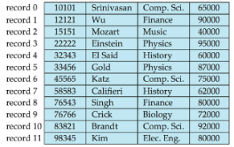
删除记录 \(i\) 的方法:
- 方法1 ：将记录 \(i+1\) 到 \(n\) 向前移动。
- 方法2 ：将记录 \(n\) 移动到位置 \(i\)。
- 方法3 ：不移动记录，而是将所有空闲记录链接到一个空闲列表（free list）中。
Free Lists¶
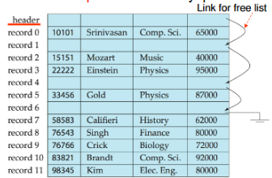
空闲列表（Free List）
- 存储地址：在文件头中存储第一个被删除记录的地址。
- 链接记录：使用第一个被删除的记录来存储第二个被删除记录的地址，依此类推。
- 指针概念：这些存储的地址可以视为指针，因为它们“指向”记录的位置。
- 优势
- 空间效率：更高效的空间表示。
- 重新利用空闲记录的正常属性空间来存储指针。
- 使用中的记录中不存储指针。
- 空闲列表通过链接被删除的记录，优化了存储空间的使用和管理。
Variable-length Records¶
出现方式：
- 文件中存储多种记录类型。
- 允许一个或多个字段具有可变长度的记录类型（如字符串）。
- 允许重复字段的记录类型（用于一些旧的数据模型）。
属性存储：
- 按顺序存储。
- 可变长度属性用固定大小（偏移量、长度）表示，实际数据存储在所有定长属性之后。
- 空值用空值位图表示。
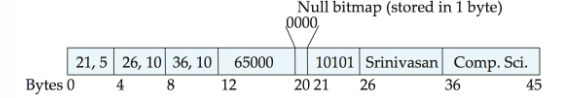
Slotted Page Structure¶
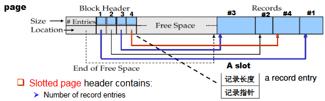
结构组成
-
块头（Block Header）：
- 包含有关页面的元数据
- 存储记录条目数量
- 标记空闲空间的结束位置
- 包含每条记录的位置和大小信息
-
槽（Slot）：
- 页头中的一个条目
- 包含两个关键信息：
- 记录长度（记录大小）
- 记录指针（指向实际记录的位置）
- 槽的标识形式为：rid =
<slot# pid>（记录ID由槽号和页ID组成）
-
记录区域：
- 实际存储数据记录的区域
- 记录从页面尾部开始向前存储（
#1, #2, #3, #4） - 中间可能有空闲空间
工作原理
- 当需要访问记录时，系统首先查找页头中的相应槽
- 通过槽中的指针找到实际记录位置
- 记录可以在页面内移动，以保持数据连续性（没有空隙）
- 移动记录后，只需更新页头中的槽信息，而不需要更新外部指针
- 指针不应直接指向记录，而应指向头中的记录条目（间接指针）。
Representation¶
保留空间（Reserved Space）¶
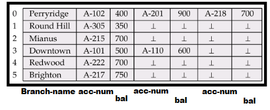
原理
- 使用已知最大长度的定长记录
- 为每条记录分配固定大小的空间
- 较短记录中的未使用空间用空值或记录结束符填充
特点
- 简单性：实现和管理简单直接
- 预测性：记录位置可以通过简单公式计算
- 存取效率：随机访问速度快，无需额外索引
- 空间浪费：短记录会造成空间浪费
- 限制性：对超过预定最大长度的记录无法处理
应用场景
- 记录长度变化不大的数据
- 对随机访问性能要求高的应用
- 简单数据结构的存储
指针（Pointers）¶
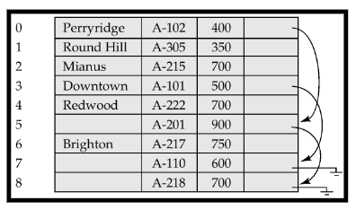
原理
- 使用指针指向实际数据的位置
- 可以是直接指针（指向实际数据）或间接指针（指向中间结构）
特点
- 灵活性：支持任意长度的记录
- 空间效率：可以减少空间浪费
- 复杂性：实现和管理相对复杂
- 性能开销：访问数据需要额外的指针解析步骤
应用场景
- 记录长度差异大的数据
- 存储大型对象或文档
- 需要灵活空间管理的应用
空间浪费：除了链中的第一条记录外，所有记录中都有浪费的空间（用于分支名称），这意味着在溢出链中的记录结构可能包含未使用的字段，造成存储效率降低
解决方案：
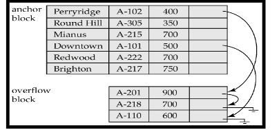
通过在文件中使用两种不同类型的块：
-
锚块（Anchor Block，锚块）：
- 包含链中的第一条记录
- 这些记录需要存储完整信息，包括分支名称等所有字段
- 通常是哈希表的主要存储区域
-
溢出块（Overflow Block，溢出块）：
- 包含除链中第一条记录以外的其他记录
- 这些记录可以使用更紧凑的结构，省略不必要的字段
- 专门设计用于存储冲突记录
溢出记录不再需要存储冗余信息，结构优化：可以为不同用途的记录设计专门的结构，性能提升：更紧凑的记录意味着每个块可以存储更多记录，减少I/O操作
两种方法的比较
| 特性 | 保留空间 | 指针 |
|---|---|---|
| 实现复杂度 | 低 | 中到高 |
| 空间利用率 | 低到中 | 中到高 |
| 访问速度 | 快 | 较慢（需解析指针） |
| 记录长度灵活性 | 有限 | 高 |
| 更新操作效率 | 高（原地更新） | 可能需要重定位 |
保留空间方法更适合记录长度相对固定且对访问速度要求高的场景，而指针方法则更适合处理变长记录和需要高空间利用率的情况。
Organization of Records in Files¶
-
Heap file (堆文件, 流水文件):a record can be placed anywhere in the file where there is space,有空间就可以放
-
Sequential file (顺序文件):store records in sequential order, based on the value of a search key of each record ，根据搜索键的值存储记录
-
Hashing file (散列文件):a hash function computed on some attribute of each record; the result specifies in which block of the file the record should be placed ，根据每个记录的某个属性计算散列值，结果指定记录应该存储在文件的哪个块中
-
Clustering file organization (聚集文件组织):records of several different relations can be stored in the same file ，几个不同的关系的记录可以存储在同一个文件中
Motivation: store related records in different relations on the same block to minimize I/O ，在同一个块中存储相关记录以最小化I/O操作
Sequential File Organization¶
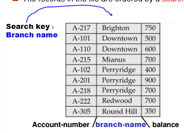
- 适用于：需要对整个文件进行顺序处理的应用
- 数据排序：文件中的记录按搜索键排序（如图中按账号-分支名排序）
- 唯一性：一个顺序文件只有一个搜索键
- 操作机制
- 删除操作 使用指针链（pointer chains）处理删除 被删除的记录位置可通过指针链接起来形成空闲列表
- 插入操作
需要找到记录应该插入的正确位置（保持排序顺序）
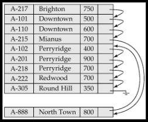
插入策略：
- 如果插入位置有空闲空间，直接插入
- 如果没有空闲空间，将记录插入溢出块
-
在任何情况下，都需要更新指针链
-
文件重组:随着插入和删除操作的频繁进行，文件的顺序性会下降;需要定期重新组织文件以恢复顺序 重组过程消耗资源，但能提高后续访问效率
Multitable Clustering¶
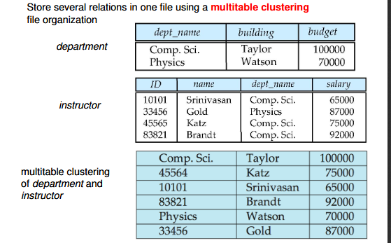
多关系存储：
- 在一个文件中存储多个关系表（如图中的department和instructor表）
- 数据按照关系间的连接属性进行排序和组织
物理布局：
- 首先是逻辑表视图：department表和instructor表分别展示
- 然后是物理存储视图：department和instructor记录交错存储，按关系聚类
聚类方式：
- 相关记录物理上相邻（如Comp.Sci.部门记录后紧跟该部门的所有教师记录）
- 每个部门的记录块后面是属于该部门的所有教师记录
优缺点：
-
优点
- 适合联合查询：
- 对涉及department和instructor的连接查询效率高
- 对查询单个部门及其所有教师的操作性能好
- 减少磁盘I/O，因为相关数据物理上相近
- 可扩展性：
- 支持可变大小的记录
- 适合联合查询：
-
缺点
- 单表查询劣势：
- 对仅涉及department表的查询效率低，可以添加指针链来链接特定关系的记录
- 必须扫描整个文件来定位所有部门记录
- 复杂度：
- 插入和删除操作复杂
- 单表查询劣势：
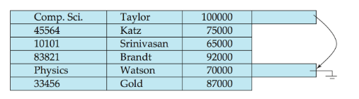
添加指针连接department关系，这样可优化对于department表的查询
维护聚类结构需要额外开销
Data-Dictionary Storage¶
Data dictionary (also called system catalog) stores metadata: that is, data about data, such as:
-
Information about relations
- Names of relations
- Names and types of attributes of each relation
- Names and definitions of views
- Integrity constraints
-
User and accounting information, including passwords
-
Statistical and descriptive data
- Number of tuples in each relation
-
Physical file organization information
- How relation is stored (sequential/hash/...)
- Physical location of relation
- Operating system file name or
- Disk addresses of blocks containing records of the relation
- Information about indices
Relational Representation of System Metadata¶
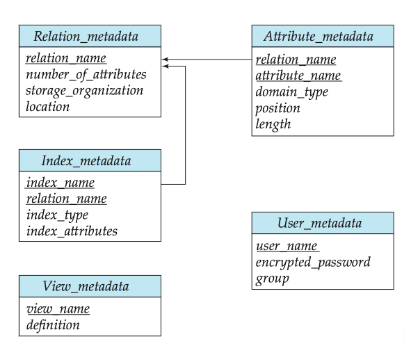
- 关系表示法：
- 关系表示法是一种用于存储和管理元数据的结构化方式
- 关系表示法将元数据存储在关系数据库中，每个关系表示一个元数据实体
- 关系表示法可以方便地进行查询和更新
Column-Oriented Storage¶
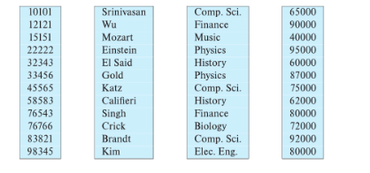
列式存储，也称为列式表示（columnar representation），是一种数据库表的物理存储方法，与传统的行式存储截然不同。
基本概念
- 核心思想：分别存储关系表的每个属性（列）
- 存储方式：相同列的数据被连续存储在一起，而不是将一行数据存储在一起
图中示例展示了一个表格，分为四列（可能是员工ID、姓名、部门和薪资）：
- 每一列单独存储（如ID列：10101, 12121, 15151...）
- 姓名列单独存储（Srinivasan, Wu, Mozart...）
- 部门列单独存储（Comp. Sci., Finance, Music...）
- 薪资列单独存储（65000, 90000, 40000...）
列式存储的优势
- 减少I/O量：
- 当查询只需访问少量列时，可以只读取需要的列
- 避免读取不需要的数据，显著减少I/O操作
- 改善CPU缓存性能：
- 同质数据连续存储增强数据局部性
- 更好地利用CPU缓存，减少缓存未命中
- 更好的压缩效率：
- 同一列的数据通常具有相似性，压缩效率更高
- 可以应用专门针对列数据特性的压缩算法
- 支持向量处理：
- 适合现代CPU架构的SIMD（单指令多数据）操作
- 能同时对多个数据元素进行相同操作
列式存储的缺点
- 元组重构成本：
- 需要从多个列中重新组合数据以重建完整行
- 增加查询处理复杂性
- 更新和删除操作成本：
- 修改一行数据需要修改多个不同的存储位置
- 使更新操作更加复杂
- 解压缩成本：
- 访问压缩数据需要额外的解压缩步骤
应用场景
- 决策支持系统：列式存储被证明比行式存储更高效
- 事务处理：传统行式存储更适合
- 混合系统：一些数据库支持混合行列存储，称为混合行/列存储
- 列式存储特别适合分析型工作负载（OLAP），如数据仓库和商业智能应用，这些应用通常只需访问少量列但需要处理大量行数据。
Representation¶
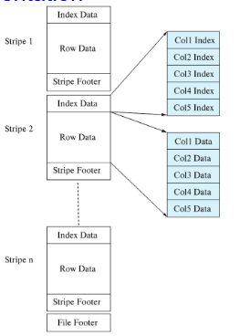
ORC和Parquet：两种流行的列式存储文件格式,这些格式在文件内部采用列式存储方式
图中展示了ORC文件格式的结构
应用场景：
- 非常适合大数据应用
- 被广泛应用于数据仓库和分析系统
ORC文件结构：
- 文件分条带(Stripe)：整个文件被分为多个条带（Stripe 1, Stripe 2, ..., Stripe n）
- 每个条带包含：
- 索引数据(Index Data)：存储每列的统计信息和位置信息
- 行数据(Row Data)：按列组织的实际数据
- 条带页脚(Stripe Footer)：包含条带的元数据
内部组织：
- 每列数据单独存储（Col1, Col2, Col3等）
- 数据分为索引部分（Col1 Index, Col2 Index等）和数据部分（Col1 Data, Col2 Data等）
- 最下方有文件页脚(File Footer)，包含整个文件的元数据